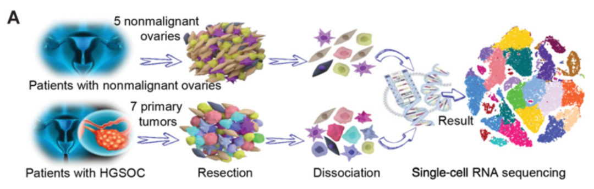
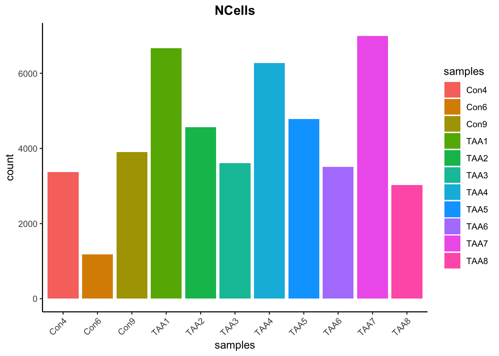
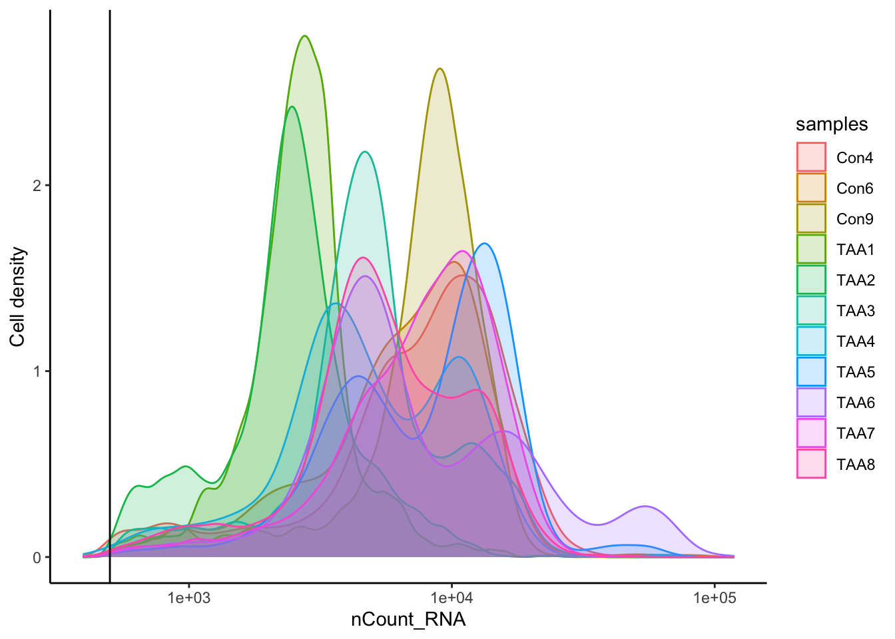

读取非标准格式的单细胞数据
1 读取非标准10X格式文件
该案例来自文献 (Xu et al. 2022)。该研究为了系统地研究高级别浆膜上皮卵巢癌（HGSOC）的肿瘤内异质性，采用深层单细胞RNA测序技术(scRNA-seq)对7例初治HGSOC早期和晚期患者及5例年龄匹配的非恶性卵巢组织标本进行肿瘤分析。共获得59,324个HGSOC和非恶性卵巢组织的单细胞，其中，33264个细胞（56%）来⾃HGSOC肿瘤患者组织，26060个（44%）来⾃⾮恶性卵巢组织标本。原始数据：GSE184880。

可以看到原始数据以10X格式提供:

但是，没有按照标准的10X格式的三个文件命名，并且没有按照样本分别建立文件夹。所以需要对其进行整理：
首先给每个样本建立文件夹
然后将对应的10X标准格式的三个文件分别复制到各个样本文件夹内
最后将文件重命名为10X格式要求的标准形式，即“barcodes.tsv.gz”、“features.tsv.gz”、“matrix.mtx.gz”
# 给每个样本建立文件夹
files <- list.files("data/sc_supplementary/GSE184880_RAW")
files [1] "GSM5599220_Norm1" "GSM5599220_Norm1.barcodes.tsv.gz"
[3] "GSM5599220_Norm1.genes.tsv.gz" "GSM5599220_Norm1.matrix.mtx.gz"
[5] "GSM5599221_Norm2" "GSM5599221_Norm2.barcodes.tsv.gz"
[7] "GSM5599221_Norm2.genes.tsv.gz" "GSM5599221_Norm2.matrix.mtx.gz"
[9] "GSM5599222_Norm3" "GSM5599222_Norm3.barcodes.tsv.gz"
[11] "GSM5599222_Norm3.genes.tsv.gz" "GSM5599222_Norm3.matrix.mtx.gz"
[13] "GSM5599223_Norm4" "GSM5599223_Norm4.barcodes.tsv.gz"
[15] "GSM5599223_Norm4.genes.tsv.gz" "GSM5599223_Norm4.matrix.mtx.gz"
[17] "GSM5599224_Norm5" "GSM5599224_Norm5.barcodes.tsv.gz"
[19] "GSM5599224_Norm5.genes.tsv.gz" "GSM5599224_Norm5.matrix.mtx.gz"
[21] "GSM5599225_Cancer1" "GSM5599225_Cancer1.barcodes.tsv.gz"
[23] "GSM5599225_Cancer1.genes.tsv.gz" "GSM5599225_Cancer1.matrix.mtx.gz"
[25] "GSM5599226_Cancer2" "GSM5599226_Cancer2.barcodes.tsv.gz"
[27] "GSM5599226_Cancer2.genes.tsv.gz" "GSM5599226_Cancer2.matrix.mtx.gz"
[29] "GSM5599227_Cancer3" "GSM5599227_Cancer3.barcodes.tsv.gz"
[31] "GSM5599227_Cancer3.genes.tsv.gz" "GSM5599227_Cancer3.matrix.mtx.gz"
[33] "GSM5599228_Cancer4" "GSM5599228_Cancer4.barcodes.tsv.gz"
[35] "GSM5599228_Cancer4.genes.tsv.gz" "GSM5599228_Cancer4.matrix.mtx.gz"
[37] "GSM5599229_Cancer5" "GSM5599229_Cancer5.barcodes.tsv.gz"
[39] "GSM5599229_Cancer5.genes.tsv.gz" "GSM5599229_Cancer5.matrix.mtx.gz"
[41] "GSM5599230_Cancer6" "GSM5599230_Cancer6.barcodes.tsv.gz"
[43] "GSM5599230_Cancer6.genes.tsv.gz" "GSM5599230_Cancer6.matrix.mtx.gz"
[45] "GSM5599231_Cancer7" "GSM5599231_Cancer7.barcodes.tsv.gz"
[47] "GSM5599231_Cancer7.genes.tsv.gz" "GSM5599231_Cancer7.matrix.mtx.gz" dirnames <- gsub(pattern = ".barcodes.tsv.gz|.genes.tsv.gz|.matrix.mtx.gz",
replacement = "",
x = files) %>%
unique() %>%
paste0("data/sc_supplementary/GSE184880_RAW/", .)
dirnames [1] "data/sc_supplementary/GSE184880_RAW/GSM5599220_Norm1"
[2] "data/sc_supplementary/GSE184880_RAW/GSM5599221_Norm2"
[3] "data/sc_supplementary/GSE184880_RAW/GSM5599222_Norm3"
[4] "data/sc_supplementary/GSE184880_RAW/GSM5599223_Norm4"
[5] "data/sc_supplementary/GSE184880_RAW/GSM5599224_Norm5"
[6] "data/sc_supplementary/GSE184880_RAW/GSM5599225_Cancer1"
[7] "data/sc_supplementary/GSE184880_RAW/GSM5599226_Cancer2"
[8] "data/sc_supplementary/GSE184880_RAW/GSM5599227_Cancer3"
[9] "data/sc_supplementary/GSE184880_RAW/GSM5599228_Cancer4"
[10] "data/sc_supplementary/GSE184880_RAW/GSM5599229_Cancer5"
[11] "data/sc_supplementary/GSE184880_RAW/GSM5599230_Cancer6"
[12] "data/sc_supplementary/GSE184880_RAW/GSM5599231_Cancer7"lapply(dirnames, dir.create, showWarnings = FALSE)lapply(files, function(files) {
# 复制相应的10X文件到各个样本文件夹内
new_dir <- gsub(pattern = ".barcodes.tsv.gz|.genes.tsv.gz|.matrix.mtx.gz",
replacement = "",
x = files) %>%
paste0("data/sc_supplementary/GSE184880_RAW/", .)
file.copy(from = paste0("data/sc_supplementary/GSE184880_RAW/", files),
to = new_dir)
# 重命名3个10X文件
new_filename <- ifelse(grepl(pattern = "barcodes", x = files), "barcodes.tsv.gz",
ifelse(grepl(pattern = "genes", x = files), "features.tsv.gz",
"matrix.mtx.gz"))
file.rename(from = paste(new_dir, files, sep = "/"),
to = paste(new_dir, new_filename, sep = "/"))
})由于在渲染本文档时，knitr会将工作目录恢复为Rproject根目录，所以不能使用getwd指定工作目录。在实际应用中，可以设置工作目录到目标数据文件夹下以简化对文件路径的定义：
# 给每个样本建立文件夹
files <- list.files()
files
dirnames <- gsub(pattern = ".barcodes.tsv.gz|.genes.tsv.gz|.matrix.mtx.gz",
replacement = "",
x = files) |> unique()
dirnames
lapply(dirnames, dir.create)
lapply(files, function(files) {
# 复制相应的10X文件到各个样本文件夹内
new_dir <- gsub(pattern = ".barcodes.tsv.gz|.genes.tsv.gz|.matrix.mtx.gz",
replacement = "",
x = files)
file.copy(from = files,
to = new_dir)
# 重命名3个10X文件
new_filename <- ifelse(grepl(pattern = "barcodes", x = files), "barcodes.tsv.gz",
ifelse(grepl(pattern = "genes", x = files), "features.tsv.gz",
"matrix.mtx.gz"))
file.rename(from = paste(new_dir, files, sep = "/"),
to = paste(new_dir, new_filename, sep = "/"))
})seurat_list <- lapply(dirnames, function(dirnames) {
print(dirnames)
sce <- CreateSeuratObject(counts = Read10X(dirnames),
project = str_split(string = dirnames,
pattern = "_",
simplify = T)[,2],
min.cells = 5,
min.features = 500)
return(sce)
})
merged_seurat <- merge(x = seurat_list[[1]],
y = seurat_list[-1],
add.cell.ids = str_split(string = dirnames,
pattern = "_",
simplify = T)[,2])
merged_seurat
merged_seurat <- JoinLayers(merged_seurat)
merged_seurat
head(merged_seurat)
tail(merged_seurat)
unique(merged_seurat$orig.ident)
# 将样本信息添加到meta.data的新的一列“sample”中:
merged_seurat$sample <- merged_seurat$orig.ident后续如有需要可以随时将工作目录恢复为Rproject根目录：
setwd(root_dir)接下来，就可以进行常规的Seurat对象构建：
seurat_list <- lapply(dirnames, function(dirnames) {
print(dirnames)
sce <- CreateSeuratObject(counts = Read10X(dirnames),
project = str_split(string = dirnames,
pattern = "_",
simplify = T)[,4],
min.cells = 5,
min.features = 500)
return(sce)
})[1] "data/sc_supplementary/GSE184880_RAW/GSM5599220_Norm1"
[1] "data/sc_supplementary/GSE184880_RAW/GSM5599221_Norm2"
[1] "data/sc_supplementary/GSE184880_RAW/GSM5599222_Norm3"
[1] "data/sc_supplementary/GSE184880_RAW/GSM5599223_Norm4"
[1] "data/sc_supplementary/GSE184880_RAW/GSM5599224_Norm5"
[1] "data/sc_supplementary/GSE184880_RAW/GSM5599225_Cancer1"
[1] "data/sc_supplementary/GSE184880_RAW/GSM5599226_Cancer2"
[1] "data/sc_supplementary/GSE184880_RAW/GSM5599227_Cancer3"
[1] "data/sc_supplementary/GSE184880_RAW/GSM5599228_Cancer4"
[1] "data/sc_supplementary/GSE184880_RAW/GSM5599229_Cancer5"
[1] "data/sc_supplementary/GSE184880_RAW/GSM5599230_Cancer6"
[1] "data/sc_supplementary/GSE184880_RAW/GSM5599231_Cancer7"merged_seurat <- merge(x = seurat_list[[1]],
y = seurat_list[-1],
add.cell.ids = str_split(string = dirnames,
pattern = "_",
simplify = T)[,4])
merged_seuratAn object of class Seurat
21454 features across 60886 samples within 1 assay
Active assay: RNA (21454 features, 0 variable features)
12 layers present: counts.Norm1, counts.Norm2, counts.Norm3, counts.Norm4, counts.Norm5, counts.Cancer1, counts.Cancer2, counts.Cancer3, counts.Cancer4, counts.Cancer5, counts.Cancer6, counts.Cancer7merged_seurat <- JoinLayers(merged_seurat)
merged_seuratAn object of class Seurat
21454 features across 60886 samples within 1 assay
Active assay: RNA (21454 features, 0 variable features)
1 layer present: countshead(merged_seurat) orig.ident nCount_RNA nFeature_RNA
Norm1_AAACCCAAGGACAGCT-1 Norm1 8191 2218
Norm1_AAACCCAAGGTATCTC-1 Norm1 8720 2396
Norm1_AAACCCACAAGTGCAG-1 Norm1 8554 2518
Norm1_AAACCCACACCCTCTA-1 Norm1 7650 2697
Norm1_AAACCCACACTCCGGA-1 Norm1 9231 2370
Norm1_AAACCCACAGAGGTTG-1 Norm1 5701 1619
Norm1_AAACCCAGTACTTCCC-1 Norm1 10002 2421
Norm1_AAACCCATCTACCACC-1 Norm1 2934 1135
Norm1_AAACGAAAGTAGGCCA-1 Norm1 6955 2198
Norm1_AAACGAAAGTCACACT-1 Norm1 7742 1891tail(merged_seurat) orig.ident nCount_RNA nFeature_RNA
Cancer7_TTTGGAGTCGTGAGAG-1 Cancer7 3568 1525
Cancer7_TTTGGTTAGGATCATA-1 Cancer7 3720 1402
Cancer7_TTTGGTTAGTTGGCTT-1 Cancer7 2591 1112
Cancer7_TTTGGTTGTCACCCTT-1 Cancer7 27107 5367
Cancer7_TTTGGTTGTTCCTACC-1 Cancer7 55055 7556
Cancer7_TTTGGTTGTTTCGCTC-1 Cancer7 66262 7369
Cancer7_TTTGGTTTCCACAAGT-1 Cancer7 2342 1143
Cancer7_TTTGTTGCATCCTAAG-1 Cancer7 3498 1440
Cancer7_TTTGTTGGTGACCTGC-1 Cancer7 74316 8182
Cancer7_TTTGTTGGTGATCATC-1 Cancer7 4245 508unique(merged_seurat$orig.ident) [1] "Norm1" "Norm2" "Norm3" "Norm4" "Norm5" "Cancer1" "Cancer2"
[8] "Cancer3" "Cancer4" "Cancer5" "Cancer6" "Cancer7"# 将样本信息添加到meta.data的新的一列“sample”中:
merged_seurat$sample <- merged_seurat$orig.ident2 读取raw_counts形式的数据
案例来自(Bill et al. 2023)。样本来自头颈部鳞状细胞癌（HNSCC）患者，总共52例标本，包括24例原发肿瘤、16例局部复发和12例多器官远处转移。原发部位包括口腔、喉/下咽、口咽和鼻咽。其中15份样本HPV阳性。原始数据：GSE234933。
可以看到该数据集没有提供标准的10X格式的3个文件。

其中的“raw_counts”文件解压后是52个RDS文件，对应了每个样本的单细胞测序数据，是一个已经包含了表达量、基因名和细胞barcode的矩阵，所以可以通过批量读取这些文件建立Seurat对象。

“sample_annotation.txt”文件包含了对每个样本的详细临床病理资料的注释，因此可以将其添加到meta.data中。

“cell_annotation.txt”文件则是原作者对细胞类型的注释，可以不添加。

2.1 读取raw_counts矩阵
# 获取所有rds文件的列表
file_list <- list.files("data/sc_supplementary/GSE234933/GSE234933_MGH_HNSCC_gex_raw_counts", pattern = ".rds")
file_list [1] "HN1_gex_raw_counts.rds" "HN13_gex_raw_counts.rds"
[3] "HN14_gex_raw_counts.rds" "HN17_gex_raw_counts.rds"
[5] "HN2_gex_raw_counts.rds" "HN20_gex_raw_counts.rds"
[7] "HN21_gex_raw_counts.rds" "HN22_gex_raw_counts.rds"
[9] "HN23_gex_raw_counts.rds" "HN25_gex_raw_counts.rds"
[11] "HN26_gex_raw_counts.rds" "HN27_gex_raw_counts.rds"
[13] "HN28_gex_raw_counts.rds" "HN29_gex_raw_counts.rds"
[15] "HN30_gex_raw_counts.rds" "HN31TS_gex_raw_counts.rds"
[17] "HN32T_gex_raw_counts.rds" "HN33_gex_raw_counts.rds"
[19] "HN34_gex_raw_counts.rds" "HN35_gex_raw_counts.rds"
[21] "HN37_gex_raw_counts.rds" "HN38_gex_raw_counts.rds"
[23] "HN39_gex_raw_counts.rds" "HN40-3-05_gex_raw_counts.rds"
[25] "HN42_gex_raw_counts.rds" "HN43_gex_raw_counts.rds"
[27] "HN45_gex_raw_counts.rds" "HN46_gex_raw_counts.rds"
[29] "HN49_gex_raw_counts.rds" "HN50_gex_raw_counts.rds"
[31] "HN52_gex_raw_counts.rds" "HN55_gex_raw_counts.rds"
[33] "HN57-1_gex_raw_counts.rds" "HN58_gex_raw_counts.rds"
[35] "HN59_gex_raw_counts.rds" "HN60_gex_raw_counts.rds"
[37] "HN61_gex_raw_counts.rds" "HN63_gex_raw_counts.rds"
[39] "HN64_gex_raw_counts.rds" "HN66_gex_raw_counts.rds"
[41] "HN67_gex_raw_counts.rds" "HN68_gex_raw_counts.rds"
[43] "HN7_gex_raw_counts.rds" "HN70_gex_raw_counts.rds"
[45] "HN71_gex_raw_counts.rds" "HN72_gex_raw_counts.rds"
[47] "HN73_gex_raw_counts.rds" "HN74_gex_raw_counts.rds"
[49] "HN75_gex_raw_counts.rds" "HN76_gex_raw_counts.rds"
[51] "HN77_gex_raw_counts.rds" "HN8_gex_raw_counts.rds" # 循环读取每个rds文件的数据并创建Seurat对象
seurat_list <- lapply(file_list, function(file) {
# 拼接文件路径
data.path <- paste0("data/sc_supplementary/GSE234933/GSE234933_MGH_HNSCC_gex_raw_counts/", file)
# 创建Seurat对象
seurat_obj <- CreateSeuratObject(counts = readRDS(data.path),
min.features = 200,
min.cells = 3)
return(seurat_obj)
})
# 合并Seurat对象
seurat_combined <- merge(seurat_list[[1]],
y = seurat_list[-1],
add.cell.ids = str_split(string = file_list,
pattern = "_",
simplify = T)[,1])
seurat_combinedAn object of class Seurat
26734 features across 330385 samples within 1 assay
Active assay: RNA (26734 features, 0 variable features)
52 layers present: counts.1, counts.2, counts.3, counts.4, counts.5, counts.6, counts.7, counts.8, counts.9, counts.10, counts.11, counts.12, counts.13, counts.14, counts.15, counts.16, counts.17, counts.18, counts.19, counts.20, counts.21, counts.22, counts.23, counts.24, counts.25, counts.26, counts.27, counts.28, counts.29, counts.30, counts.31, counts.32, counts.33, counts.34, counts.35, counts.36, counts.37, counts.38, counts.39, counts.40, counts.41, counts.42, counts.43, counts.44, counts.45, counts.46, counts.47, counts.48, counts.49, counts.50, counts.51, counts.52head(seurat_combined) # 可以看到这个案例实际上不需要添加cell.ids orig.ident nCount_RNA nFeature_RNA
HN1_HN1_AAACCTGAGTATTGGA-1 HN1 948 574
HN1_HN1_AAACCTGAGTTGCAGG-1 HN1 6745 257
HN1_HN1_AAACCTGCAATAGCAA-1 HN1 677 320
HN1_HN1_AAACCTGCATTTCACT-1 HN1 4540 1129
HN1_HN1_AAACCTGTCGGCGGTT-1 HN1 909 444
HN1_HN1_AAACCTGTCTCGTTTA-1 HN1 633 352
HN1_HN1_AAACGGGAGCAGCCTC-1 HN1 1262 633
HN1_HN1_AAACGGGAGCCCAGCT-1 HN1 513 275
HN1_HN1_AAACGGGAGTACGCGA-1 HN1 1152 416
HN1_HN1_AAACGGGCACATTTCT-1 HN1 426 249unique(seurat_combined$orig.ident) [1] "HN1" "HN13" "HN14" "HN17" "HN2" "HN20"
[7] "HN21" "HN22" "HN23" "HN25" "HN26" "HN27"
[13] "HN28" "HN29" "HN30" "HN31TS" "HN32T" "HN33"
[19] "HN34" "HN35" "HN37" "HN38" "HN39" "HN40-3-05"
[25] "HN42" "HN43" "HN45" "HN46" "HN49" "HN50"
[31] "HN52" "HN55" "HN57-1" "HN58" "HN59" "HN60"
[37] "HN61" "HN63" "HN64" "HN66" "HN67" "HN68"
[43] "HN7" "HN70" "HN71" "HN72" "HN73" "HN74"
[49] "HN75" "HN76" "HN77" "HN8" 2.2 添加样本信息
sample_anno <- read.table("data/sc_supplementary/GSE234933/GSE234933_MGH_HNSCC_sample_annotation.txt",
sep = "\t",
header = T)
head(sample_anno) Sample Sex Age HPV.Status Smoking.history Original.anatomic.site
1 HN1 Male 37 Negative Yes Oral cavity
2 HN2 Male 55 Negative Yes Oral cavity
3 HN7 Male 90 Negative No Oral cavity
4 HN8 Male 89 Negative Yes Larynx/Hypopharynx
5 HN13 Female 64 Negative Yes Larynx/Hypopharynx
6 HN14 Female 53 Negative Yes Oropharynx
Anatomic.location.of.scRNA.seq.specimen
1 Primary
2 Distant metastasis (Lung)
3 Primary
4 Distant metastasis (sternum)
5 Distant metastasis (skin)
6 Distant metastasis (pleura)sample_anno$Sample [1] "HN1" "HN2" "HN7" "HN8" "HN13" "HN14"
[7] "HN17" "HN20" "HN21" "HN22" "HN23" "HN25"
[13] "HN26" "HN27" "HN28" "HN29" "HN30" "HN31TS"
[19] "HN32T" "HN33" "HN34" "HN35" "HN37" "HN38"
[25] "HN39" "HN40-3-05" "HN42" "HN43" "HN45" "HN46"
[31] "HN49" "HN50" "HN52" "HN55" "HN57-1" "HN58"
[37] "HN59" "HN60" "HN61" "HN63" "HN64" "HN66"
[43] "HN67" "HN68" "HN70" "HN71" "HN72" "HN73"
[49] "HN74" "HN75" "HN76" "HN77" old_meta.data <- rownames_to_column(seurat_combined@meta.data, var = "cell_id")
new_meta.data <- merge(x = old_meta.data,
y = sample_anno,
by.x = "orig.ident",
by.y = "Sample",
all.x = T)
new_meta.data$sample <- new_meta.data$orig.ident
head(new_meta.data) orig.ident cell_id nCount_RNA nFeature_RNA Sex Age
1 HN1 HN1_HN1_AAACCTGAGTATTGGA-1 948 574 Male 37
2 HN1 HN1_HN1_AAACCTGAGTTGCAGG-1 6745 257 Male 37
3 HN1 HN1_HN1_AAACCTGCAATAGCAA-1 677 320 Male 37
4 HN1 HN1_HN1_AAACCTGCATTTCACT-1 4540 1129 Male 37
5 HN1 HN1_HN1_AAACCTGTCGGCGGTT-1 909 444 Male 37
6 HN1 HN1_HN1_AAACCTGTCTCGTTTA-1 633 352 Male 37
HPV.Status Smoking.history Original.anatomic.site
1 Negative Yes Oral cavity
2 Negative Yes Oral cavity
3 Negative Yes Oral cavity
4 Negative Yes Oral cavity
5 Negative Yes Oral cavity
6 Negative Yes Oral cavity
Anatomic.location.of.scRNA.seq.specimen sample
1 Primary HN1
2 Primary HN1
3 Primary HN1
4 Primary HN1
5 Primary HN1
6 Primary HN1rownames(new_meta.data) <- new_meta.data$cell_id
new_meta.data$cell_id <- NULL
new_meta.data[,c(4, 6:10)] <- lapply(new_meta.data[,c(4, 5, 7:10)], as.factor)
summary(new_meta.data) orig.ident nCount_RNA nFeature_RNA Sex
Length:330385 Min. : 215 Min. : 184 Female: 65737
Class :character 1st Qu.: 897 1st Qu.: 471 Male :264648
Mode :character Median : 1886 Median : 845
Mean : 3439 Mean :1107
3rd Qu.: 3537 3rd Qu.:1348
Max. :126539 Max. :8839
Age HPV.Status Smoking.history Original.anatomic.site
Min. :31.00 64 : 29808 No :177238 Larynx/Hypopharynx: 68470
1st Qu.:56.00 76 : 25982 Yes:153147 Nasopharynx : 30573
Median :64.00 70 : 23193 Oral cavity :107833
Mean :63.42 44 : 21985 Oropharynx :115022
3rd Qu.:71.00 67 : 21053 Unknown : 8487
Max. :91.00 55 : 19302
(Other):189062
Anatomic.location.of.scRNA.seq.specimen sample
Primary :190573 HN63 : 25501
Locoregional recurrence : 59176 HN76 : 15798
Distant metastasis (Lung) : 34541 HN68 : 14851
Distant metastasis (Liver) : 23083 HN77 : 13892
Unknown primary of the head and neck: 8487 HN42 : 12062
Distant metastasis (skin) : 7073 HN74 : 11863
(Other) : 7452 (Other):236418 seurat_combined@meta.data <- new_meta.data3 读取txt/tsv/csv等文本文件表达量矩阵信息
以2020的文章：《Single-Cell Transcriptome Analysis Reveals Dynamic Cell Populations and Differential Gene Expression Patterns in Control and Aneurysmal Human Aortic Tissue》(Li et al. 2020) 举例说明。数据集链接：GSE155468。

该案例提供了11个人体主动脉组织样品的单细胞转录组测序数据，其中8名患者为升胸主动脉瘤（ATAA）and 3名患者作为对照。每个样品都是一个独立的txt文本文件，蕴藏着其表达量矩阵信息。
首先我们读取其中一个文件看一下其形式：
# 列出所有的文件名
files <- list.files("data/sc_supplementary/GSE155468_RAW")
files [1] "GSM4704931_Con4.txt.gz" "GSM4704932_Con6.txt.gz" "GSM4704933_Con9.txt.gz"
[4] "GSM4704934_TAA1.txt.gz" "GSM4704935_TAA2.txt.gz" "GSM4704936_TAA3.txt.gz"
[7] "GSM4704937_TAA4.txt.gz" "GSM4704938_TAA5.txt.gz" "GSM4704939_TAA6.txt.gz"
[10] "GSM4704940_TAA7.txt.gz" "GSM4704941_TAA8.txt.gz"# 简化文件名用作样本名
samples <- gsub(pattern = "GSM.*._|.txt.gz", replacement = "", x = files)
samples [1] "Con4" "Con6" "Con9" "TAA1" "TAA2" "TAA3" "TAA4" "TAA5" "TAA6" "TAA7"
[11] "TAA8"# 试读取其中一个文件
test <- fread("data/sc_supplementary/GSE155468_RAW/GSM4704931_Con4.txt.gz", data.table = F)
test[1:3, 1:3] V1 AAACCCAAGCGGACAT.1 AAACCCAAGCGTCAAG.1
1 AL627309.1 0 0
2 AL669831.5 0 0
3 FAM87B 0 0可以看到，该表达矩阵的问题是行名不是基因名没有作为行名，而是以单独的一列显示，因此需要进行预处理后再用上面类似的方法批量读取和创建Seurat对象：
seurat_list <- lapply(files, function(file) {
filepath <- paste0("data/sc_supplementary/GSE155468_RAW/", file)
counts <- fread(filepath, data.table = F)
rownames(counts) <- counts[,1]
counts <- counts[,-1]
CreateSeuratObject(counts = counts,
project = gsub(pattern = "GSM.*._|.txt.gz",
replacement = "",
x = file),
min.cells = 5,
min.features = 300)
})
merged_seurat <- merge(x = seurat_list[[1]],
y = seurat_list[-1],
add.cell.ids = samples)
merged_seuratAn object of class Seurat
21210 features across 47881 samples within 1 assay
Active assay: RNA (21210 features, 0 variable features)
11 layers present: counts.Con4, counts.Con6, counts.Con9, counts.TAA1, counts.TAA2, counts.TAA3, counts.TAA4, counts.TAA5, counts.TAA6, counts.TAA7, counts.TAA8head(merged_seurat) orig.ident nCount_RNA nFeature_RNA
Con4_AAACCCAAGCGGACAT.1 Con4 5700 2067
Con4_AAACCCAAGCGTCAAG.1 Con4 12694 2850
Con4_AAACCCACATTCTCTA.1 Con4 14713 2946
Con4_AAACCCAGTCGACTTA.1 Con4 3000 546
Con4_AAACCCATCCATCAGA.1 Con4 15045 4106
Con4_AAACGAAAGGAACGCT.1 Con4 9877 2793
Con4_AAACGAAAGGTAGATT.1 Con4 6860 2050
Con4_AAACGAAAGTCAATCC.1 Con4 5628 1434
Con4_AAACGAACACGGCACT.1 Con4 9226 2217
Con4_AAACGAAGTTCAAAGA.1 Con4 6064 1743# 新增样本列
merged_seurat$samples <- merged_seurat$orig.ident简单查看一下细胞/基因数：
# Visualize the number of cell counts per sample
merged_seurat@meta.data |>
ggplot(aes(x = samples, fill = samples)) +
geom_bar() +
theme_classic() +
theme(axis.text.x = element_text(angle = 45, vjust = 1, hjust = 1)) +
theme(plot.title = element_text(hjust = 0.5, face = "bold")) +
ggtitle("NCells")
# Visualize the number UMIs/transcripts per cell
merged_seurat@meta.data |>
ggplot(aes(color = samples, x = nCount_RNA, fill = samples)) +
geom_density(alpha = 0.2) +
scale_x_log10() +
theme_classic() +
ylab("Cell density") +
geom_vline(xintercept = 500)

4 读取非标准大体积文本文件单细胞数据
案例数据来自2020年的文章《Single-cell transcriptomics reveals regulators underlying immune cell diversity and immune subtypes associated with prognosis in nasopharyngeal carcinoma》(Chen et al. 2020)。该研究以15例鼻咽癌患者作为研究对象，1例慢性鼻咽炎患者的正常鼻咽上皮组织作为对照。所有样品均采用10x genomics V2 3’单细胞RNA测序。数据链接：GSE150430。

4.1 加载包
4.2 数据读取
下载数据之后，首先按照通常做法通过data.table包的fread()函数尝试读取之后，发现无法正确读取列名，即cell barcode：
counts <- fread("data/sc_supplementary/GSE150430_npc_scRNA_hg19_processed_data.txt",
data.table = F)
而用read.table()函数读取这个文件是可以正确读取列名的:
counts <- read.table("data/sc_supplementary/GSE150430_npc_scRNA_hg19_processed_data.txt")读取后的数据如下：

可以发现该表达矩阵行名为基因，列为cell barcode，同时有代表样本的前缀。但是第一行为作者注释的细胞类型，因此，可能是由于这样的表头结构导致fread不能正确的读取这个数据。但是用基础的read.table读取这种大型数据非常耗时间，因此下面首先用read.table读取前两行的数据，即cell barcode和细胞类型；然后通过fread读取剩余的表达矩阵；最后将cell barcode和表达矩阵进行合并以构建Seurat对象。
4.3 数据整理
# 单独读取表头
head <- read.table("data/sc_supplementary/GSE150430_npc_scRNA_hg19_processed_data.txt",
nrows = 1,
header = T)
# 读取表达矩阵
counts <- fread("data/sc_supplementary/GSE150430_npc_scRNA_hg19_processed_data.txt",
data.table = F,
skip = 2) # 跳过前两行

CreateSeuratObject()去创建Seurat对象时，由于该数据包含了所有样本的单细胞测序数据，导致其体积过大超出了R的内存上限。因此，接下来，我们将这个数据根据样本拆分成不同的RDS文件，然后再用上面类似的方法依次读取这些RDS文件，避免一次性读取导致的内存溢出。# [1] "N01" "P01" "P03" "P05" "P06" "P09" "P11" "P12" "P13" "P14" "P15" "P02"
# [13] "P04" "P07" "P08" "P10"4.4 构建Seurat对象
filenames <- list.files("output/sc_supplementary/GSE150430")
filenames# [1] "N01.rds" "P01.rds" "P02.rds" "P03.rds" "P04.rds" "P05.rds" "P06.rds"
# [8] "P07.rds" "P08.rds" "P09.rds" "P10.rds" "P11.rds" "P12.rds" "P13.rds"
# [15] "P14.rds" "P15.rds"# 循环读取每个rds文件的数据并创建Seurat对象
seurat_list <- lapply(filenames, function(file) {
# 拼接文件路径
data.path <- paste0("output/sc_supplementary/GSE150430/", file)
# 创建Seurat对象
seurat_obj <- CreateSeuratObject(counts = readRDS(data.path))
return(seurat_obj)
})
# 合并Seurat对象
merged_seurat <- merge(seurat_list[[1]],
y = seurat_list[-1])
merged_seurat# An object of class Seurat
# 24720 features across 48584 samples within 1 assay
# Active assay: RNA (24720 features, 0 variable features)
# 16 layers present: counts.1, counts.2, counts.3, counts.4, counts.5, counts.6, counts.7, counts.8, counts.9, counts.10, counts.11, counts.12, counts.13, counts.14, counts.15, counts.16head(merged_seurat) 
# 添加样本列
merged_seurat$samples <- merged_seurat$orig.ident
# 保存
saveRDS(merged_seurat, file = "output/sc_supplementary/GSE150430_merged_seurat.rds")5 读取SMART-seq测序数据
数据链接：GSE140228。

这个数据集用了两种测序技术，即Drop-seq和SMART-seq，分别属于测3′ 或5′ 端（3′或5′-end sequencing）的技术和测全长转录本（full-length transcript sequencing）的技术。这里我们下载SMART-seq测序数据。
读取barcodes、features和matrix数据:
rm(list = ls())
library(Seurat)
library(data.table)
list.files("data/sc_supplementary/GSE140228")[1] "GSE140228_cell_info_Smartseq2.tsv.gz"
[2] "GSE140228_gene_info_Smartseq2.tsv.gz"
[3] "GSE140228_read_counts_Smartseq2.csv"
[4] "GSE140228_read_counts_Smartseq2.csv.gz"barcodes <- fread(
"data/sc_supplementary/GSE140228/GSE140228_cell_info_Smartseq2.tsv.gz",
data.table = F # 返回data.frame型数据
)
head(barcodes, 5) Barcode Donor Tissue celltype_sub Sample
1 NL-plus-19-0222 D20170222 Normal NK-C7-CD160 D20170222-Normal-CD45+
2 NL-plus-20-0222 D20170222 Normal CD8-C6-GZMK D20170222-Normal-CD45+
3 NL-plus-2-0222 D20170222 Normal CD8-C8-PDCD1 D20170222-Normal-CD45+
4 NL-plus-22-0222 D20170222 Normal CD8-C6-GZMK D20170222-Normal-CD45+
5 NL-plus-23-0222 D20170222 Normal CD8-C8-PDCD1 D20170222-Normal-CD45+
Histology Tissue_sub
1 HCC Normal
2 HCC Normal
3 HCC Normal
4 HCC Normal
5 HCC Normalfeatures <- fread(
"data/sc_supplementary/GSE140228/GSE140228_gene_info_Smartseq2.tsv.gz",
data.table = F
)
head(features, 5) ENSEMBL SYMBOL CHR START END STRAND
1 ENSG00000223972 DDX11L1 1 11869 14409 +
2 ENSG00000278267 MIR6859-1 1 17369 17436 -
3 ENSG00000284332 MIR1302-2 1 30366 30503 +
4 ENSG00000237613 FAM138A 1 34554 36081 -
5 ENSG00000268020 OR4G4P 1 52473 53312 +
BIOTYPE
1 transcribed_unprocessed_pseudogene
2 miRNA
3 miRNA
4 lincRNA
5 unprocessed_pseudogenematrix <- fread(
"data/sc_supplementary/GSE140228/GSE140228_read_counts_Smartseq2.csv.gz",
data.table = F,
)
matrix[1:5, 1:5] gene NL-plus-19-0222 NL-plus-20-0222 NL-plus-2-0222 NL-plus-22-0222
1 DDX11L1 0 0 0 0
2 MIR6859-1 0 0 0 0
3 MIR1302-2 0 0 0 0
4 FAM138A 0 0 0 0
5 OR4G4P 0 0 0 0这个matrix第一列为基因名，列名为barcodes。features和barcodes是对每个基因和细胞的补充信息。所以，接下来我们可以直接用这个matrix文件构建counts矩阵。后续如有需要可以将features和barcodes中的信息补充上去。
# 构建counts矩阵
counts <- matrix
row.names(counts) <- counts$gene
counts$gene <- NULL
# 创建Seurat对象
merged_seurat <- CreateSeuratObject(
counts = counts,
project = "HCC",
min.cells = 3,
min.features = 200
)
merged_seuratAn object of class Seurat
44417 features across 7074 samples within 1 assay
Active assay: RNA (44417 features, 0 variable features)
1 layer present: countshead(merged_seurat, 5) orig.ident nCount_RNA nFeature_RNA
NL-plus-19-0222 HCC 685649.3 4313
NL-plus-20-0222 HCC 932696.0 4746
NL-plus-2-0222 HCC 692261.5 4567
NL-plus-22-0222 HCC 765533.3 4790
NL-plus-23-0222 HCC 574235.8 35496 单独提供每个细胞测序结果的数据的读取
数据链接：GSE84465。


可以看到，该数据集提供每一个细胞的测序结果。对于这样的数据，可以参考单细胞数据下载和Seurat对象的构建（上）中的方法来读取。